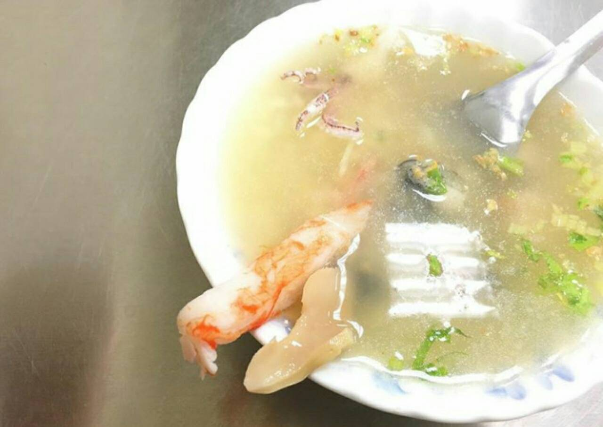
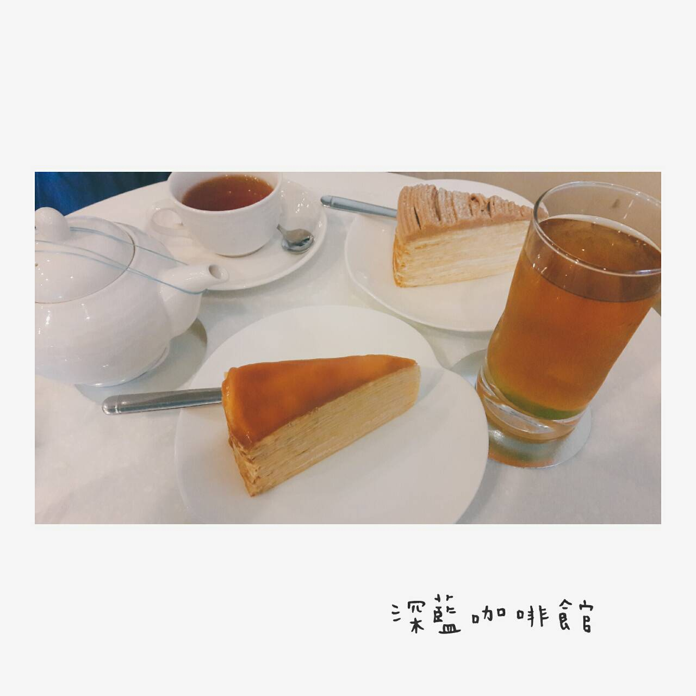

太陽牌冰品
位在台南民權路上的太陽牌冰城，創立於民國46年，創始人最早是以賣手工芋冰聞名，
當時很多叭噗車都向他批發，而草湖芋仔冰則是從第二代老闆開始引進設備製作
草湖芋仔冰一份有5顆(NT.50元)，口味有芋頭、花生、牛奶、酸梅、鳳梨、紅豆、百香果任選，
最後點了三顆芋頭＋一顆花生、一顆鳳梨。就是這小方塊，讓我思思念念，淡淡的芋頭味，不甜膩的清新，綿綿的濃稠感，
傳統芋仔冰的感動，最愛的還是這款；花生口味的味道則是很香濃，鳳梨酸酸甜甜的。
|
冰ㄉ• かき氷
冰ㄉ是一間原本位於台南市東興路的店家，現在搬到德光路和崇善路的交叉口，
跟花苼米(好像是間畫室還是才藝班之類的)共用同一個門牌地址，
而且由於裝潢色調滿相近的，剛開始經過時常常忽略它的存在。
小小的店面大約六~八個位置，因此用餐時人潮一多可能會有一點擠。
|
一二三冰城
這間新一二三冰城已經在台南開了五十年以上，
知道這間老冰店幾年了，買過不少次，不過都是匆匆外帶居多，
隨著夏天的來到，白天溫度節節升高，我們假日就跑來這吃冰消暑，
這間冰店原本在長榮路與開元路的路口旁，後來因為店面問題搬回住家經營，
店在小巷內不太好找，最近巷口才又裝了大招牌。

|
禿頭老爹鮑魚海產粥
海鮮粥和海鮮鍋燒意麵的精華在於澎湃的海鮮料，
肥美大顆的蚵仔、脆Q的小卷，蝦子用的還是台南的特產火燒蝦，
而且還加了片鮑魚，老爹說，林林總總這些現撈仔食材加起來的成本很高，
但因為他的店就在騎樓所以自己多少吸收些還維持的住，早年剛創業時原本選在隔壁，
但後來不能租了，郭醫師人很好的就讓他們過來這裡，下完班的清晨，
還要趕到漁市採買魚貨，火燒蝦是跟特定魚貨商進的特等貨，色澤美且肉感佳。

|
深藍咖啡館
餅皮帶著濃濃的雞蛋奶油香氣，每一層抹了薄薄的細緻奶油餡提升口感
以前吃到的千層奶油餡都特別甜也特別多，沒這麼細緻滑順，餅皮也不如這裡的柔軟
大量的草莓果肉微酸微甜滋味點綴的千層餅皮更加美味
不過這草莓口味千層很難優雅享用，用力一壓便東倒西歪
最後就是散的整個盤子，雖然不如一開始的美麗，讓人著迷的風味卻一點也不減少

|